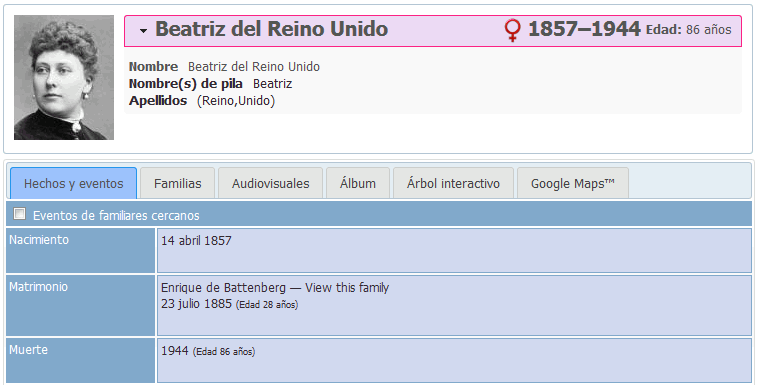

Exámenes - WebTrees 1.7.9
2. Crear árbol genealógico (1,5 puntos)



3. Personalizar elementos (1,5 puntos)

4. Prohibir el acceso a Internet Explorer (0,5 puntos)

5. Idiomas (1,5 puntos)


6. Modificar el estilo webtrees (2 puntos)

7. Crear nuevo estilo (1,5 puntos)
8. Alias (0,5 puntos)

9. Copia de seguridad (0,5 puntos)